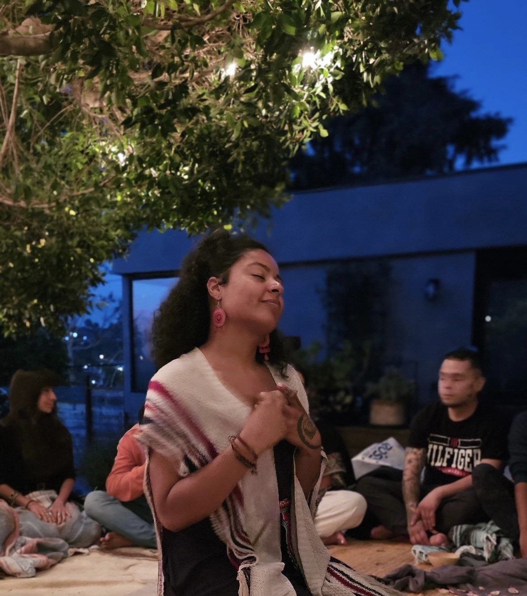
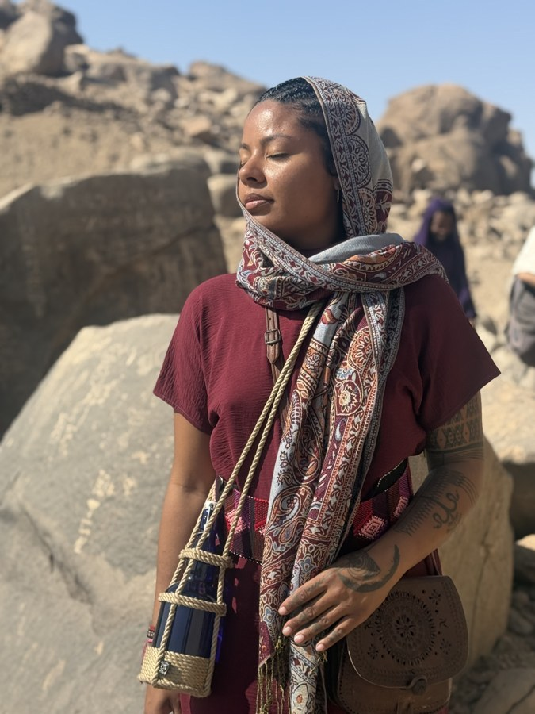

How do we tend what we have inherited so that life may continue through us with greater beauty, health, and reciprocity than it did before?¿Cómo cuidamos lo que hemos heredado para que la vida continúe a través de nosotros con más belleza, salud y reciprocidad que antes?
This question lives at the heart of Madre y Agua.Esta pregunta vive en el corazón de Madre y Agua.
We are part of what sustains us.Somos parte de lo que nos sostiene.
We are shaped by our bodies, our families, our communities, our ancestors, the land beneath our feet, and the living world we belong to.Nos van dando forma nuestros cuerpos, nuestras familias, nuestras comunidades, nuestros ancestros, la tierra bajo nuestros pies y el mundo vivo al que pertenecemos.
Through food, herbs, beauty, story, song, seasonal living, ritual, and community care, Madre y Agua returns to the everyday ways life is tended and sustained. These practices hold memory, create belonging, and remind us that care is something we participate in, together.A través del alimento, las hierbas, la belleza, las historias, el canto, el vivir con las estaciones, el ritual y el cuidado comunitario, Madre y Agua vuelve a las formas cotidianas en que la vida se cuida y se sostiene. Estas prácticas guardan memoria, crean pertenencia y nos recuerdan que el cuidado es algo en lo que participamos.
- Cooking becomes kinship.Cocinar se vuelve parentesco.
- Gathering becomes care.Reunirse se vuelve cuidado.
- Beauty becomes nourishment.La belleza se vuelve alimento.
- Ritual becomes rhythm.El ritual se vuelve ritmo.
Healing is one way life continues. It emerges through the attention we give to ourselves, one another, and what has been entrusted to us.La sanación es una forma en que la vida continúa. Surge de la atención que nos damos, que ofrecemos a los demás y a aquello que nos ha sido confiado.
Meet NicholeConoce a Nichole

I’m Nichole Elana, a first-generation Colombian-American raised along California’s Pacific coast, where the ocean has always felt like memory.Soy Nichole Elana, colombiana-estadounidense de primera generación, criada en la costa del Pacífico de California, donde el océano siempre ha tenido algo de memoria.
My roots reach from the Afro-Colombian Pacific and the Andes to the Cherokee homelands of the Southeastern United States and the folk traditions of my Swedish-German lineage.Mis raíces llegan desde el Pacífico afrocolombiano y los Andes hasta los territorios ancestrales Cherokee del sureste de Estados Unidos y las tradiciones populares de mi linaje sueco-alemán.
Across these inheritances, care was woven into daily life. It lived in simmering pots, flower baths, herbal remedies, songs carried to the water, celebrations, grief, and the quiet ways people sustained one another through changing seasons.A través de estas herencias, el cuidado estaba entretejido en la vida cotidiana. Vivía en las ollas a fuego lento, los baños de flores, los remedios herbales, los cantos llevados al agua, las celebraciones, el duelo y las formas silenciosas en que las personas se sostenían unas a otras a través de las estaciones cambiantes.
Those inheritances became the beginning of my own path.Esas herencias se convirtieron en el comienzo de mi propio camino.
For more than a decade, I have studied herbalism, nourishment, ritual arts, and community care. My understanding has been shaped just as deeply by lived experience: my relationship with womanhood, fertility, illness, ancestry, creativity, loss, love, and becoming.Durante más de una década, he estudiado herbolaria, alimentación, artes rituales y cuidado comunitario. Mi comprensión también ha sido moldeada profundamente por la experiencia vivida: mi relación con la feminidad, la fertilidad, la enfermedad, la ancestralidad, la creatividad, la pérdida, el amor y el devenir.
Over time, I began to recognize the connections between the things I was learning, the things I was living, and the ways I wanted to care for others.Con el tiempo, comencé a reconocer las conexiones entre lo que estaba aprendiendo, lo que estaba viviendo y las formas en que quería cuidar de los demás.
Madre y Agua grew from those connections. It is where the everyday and the ceremonial meet, and where the relationships between body, land, lineage, and community continue to unfold.Madre y Agua nació de esas conexiones. Es un lugar donde lo cotidiano y lo ceremonial se encuentran, y donde las relaciones entre el cuerpo, la tierra, el linaje y la comunidad siguen desplegándose.
Today, I continue to study, listen, and practice, following these relationships into new forms of care.Hoy sigo estudiando, escuchando y practicando, siguiendo estas relaciones hacia nuevas formas de cuidado.
An Ongoing PracticeLa Práctica Continua

This work is not a destination or a fixed way of seeing. It is an ongoing practice of paying attention to what sustains life, what we have received, and what we choose to carry forward.Este trabajo no es un destino ni una forma fija de ver. Es una práctica continua de prestar atención a lo que sostiene la vida, a lo que hemos recibido y a lo que elegimos llevar adelante.
Whether you’re here to explore a one-on-one session, join a gathering, read a story, or simply spend some time with the work, you’re welcome here.Ya sea que estés aquí para explorar una sesión, unirte a un encuentro, leer una historia o simplemente pasar un tiempo con este trabajo, eres bienvenida aquí.
If you’d like to bring Madre y Agua into your community or a gathering of your own, I’d love to hear from you, here.Si te gustaría llevar Madre y Agua a tu comunidad o a un encuentro propio, me encantará saber de ti. Escríbeme aquí.